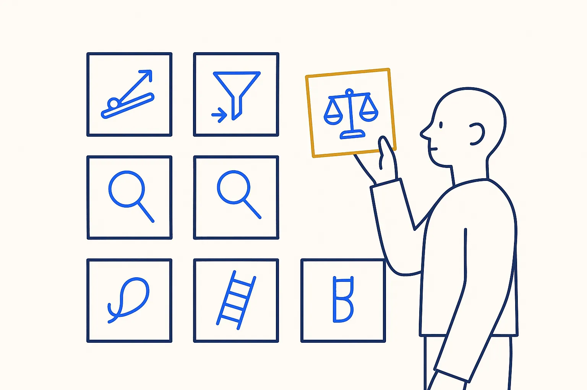
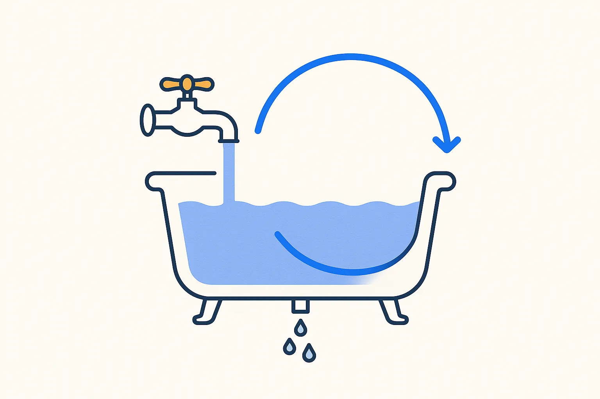

Thinking tools · book
The Great Mental Models, Volume 1
First principles and inversion: ask what would make the tool fail, and build that check first.
Shane Parrish & Rhiannon Beaubien · 2019
What the book is about
The first volume of Shane Parrish's series on the thinking tools that hold across fields: the map is not the territory, circle of competence, first principles, second-order thinking, inversion and more.
Ideas I took from it
- The map is not the territory. A data model is a map; it needs maintenance when the business moves.
- Inversion. Ask what would guarantee failure, and avoid that first.
- Second-order thinking. The quick fix is faster today and harder to maintain next year.
On a Build Day
Before building, we ask how the tool could give a wrong answer without anyone noticing, and build that check before the nice screen.
Links
Concepts behind it
- Find the Essence First — Distil the essence before the detail — in interviews, grasp the data and the bigger picture first, then drill down; and quickly identify what actually works in the giants who came before us.
- Reality Check — Test the model and the plan against the real world — the actual data, deliveries and behavior — not against the assumption you started with.
- A Confident Error Has No Tell — A hallucination arrives in exactly the same shape as a correct answer. That is the whole problem — and why fluency is not evidence.
Related articles
More in Thinking tools

Super ThinkingGabriel Weinberg & Lauren McCann · 2019A catalogue of mental models; good for naming what you are doing when you scope a problem.Read more →
Thinking in Systems: A PrimerDonella H. Meadows · 2008Stocks, flows and feedback loops. Useful for seeing why a tool that works on day one can drift by month three.Read more →